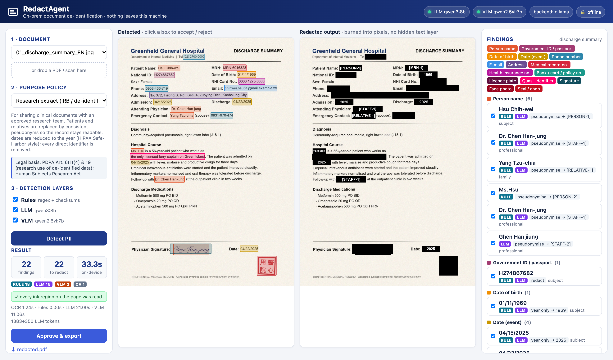
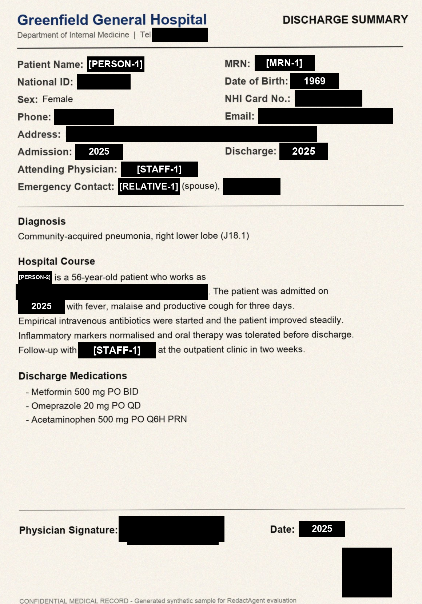
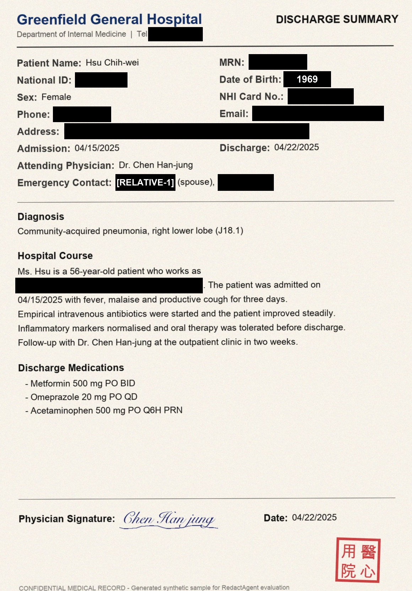
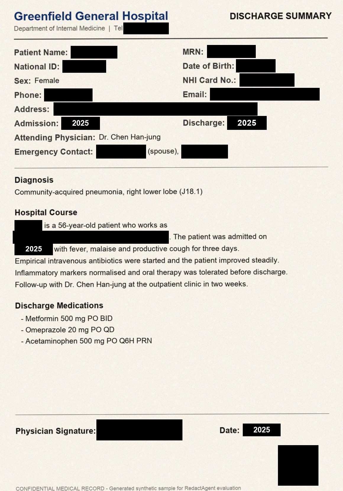

On-premises AI that finds and removes personal data from scanned documents —
so hospitals, law firms and agencies can share records without the records ever leaving the building.
Battlefield Thunderstorm · ASUS UGen Intel Arc Pro B70 32GBTheme: Workplace AIGlobal Online Track
Yu-Tsen Tsai (蔡侑岑) · Dept. of Computer Science & Information Engineering, National Taiwan University
Context & problem
Sensitive documents have to leave the building every day
Medical records, contracts, police reports and HR files are routinely shared for research, litigation,
insurance and public-information requests. Every copy must first be stripped of personal data — today, by hand.
Hospitals
Research & IRB
Chart extracts for approved studies must be de-identified before release.
Law firms & courts
Litigation
Filings keep the parties but mask ID numbers, accounts and witnesses.
Handwritten forms, ID photos and seals travel to third parties.
Slow & error-prone
A reviewer reads every line of every scan, then a second reviewer checks. One missed ID number is a reportable breach.
Cloud AI is off-limits
The documents are exactly the data that policy forbids sending to an external API — the tool must run on-premises.
Stakes are rising
Taiwan's PDPA amendment (promulgated Nov 2025) creates a dedicated regulator and fines up to NT$15 million per failure to rectify.
Sources: K&L Gates, "New Developments in the Taiwan Personal Data Protection Act" (Jan 2026); Baker McKenzie InsightPlus on the 2025 PDPA amendment.
RedactAgent · ASUS UGen AI League 20262
Context & problem
Why existing approaches fall short
Real documents are scanned, bilingual, handwritten and stamped. Identifiers hide in free text, not just in fixed formats.
Capability
Manual review
Regex / DLP tools
Cloud AI APIs
RedactAgent
Scanned / photographed pages (OCR)
yes
add-on
yes
yes — PP-OCR
Names, addresses, roles in free text
yes
no
yes
yes — local LLM
Quasi-identifiers ("the only dentist on Orchid Island")
if noticed
no
partly
yes
Signatures, ID photos, red seals (印章)
yes
no
partly
yes — local VLM + colour
Taiwan formats (身分證 checksum, ROC dates, NHI no.)
yes
custom rules
weak
built-in
Data never leaves the premises
yes
yes
no
yes
Purpose-aware (research vs. court vs. public)
by memory
no
no
policy files
Speed & tamper-evident audit trail
minutes / page
fast
vendor logs
seconds / page + hash chain
RedactAgent · ASUS UGen AI League 20263
Context & problem
Who uses it — a day in the medical-records office
"Our IRB-approved study needs 400 discharge summaries. Each one has the patient's name, ID,
address, phone, the doctor's signature and the hospital seal — and sometimes a sentence like
'works as the only ferry captain on Green Island'."
Source: Ministry of Health and Welfare, 2024 Taiwan Health and Welfare Report (476 hospitals, 2023).
RedactAgent · ASUS UGen AI League 20264
Solution
RedactAgent: detect, decide, redact, prove — all on-prem
A hybrid pipeline: deterministic rules for precision, a local LLM for context, a local VLM for what is not text,
and purpose-based policies that decide what to do with each finding.
1 · IngestPDF, scan or phone photo; pages rendered at 150 dpi; SHA-256 logged.
→
2 · ReadPP-OCR (ONNX / OpenVINO) with per-character boxes, EN + 中文.
→
3 · DetectRULELLMVLM layers, merged and cross-checked.
→
4 · DecidePurpose policy: redact, pseudonymise, keep year only, or keep.
→
5 · ReviewHuman approves or rejects each box in the browser.
Names in narratives, the role of each person (patient vs. physician vs. witness),
quasi-identifiers, handwritten fields, signatures, ID photos and red seals.
Redacts for a purpose
The same page becomes an IRB extract with consistent pseudonyms, a court exhibit that keeps
the parties, or a public release that keeps only officials. Policies are editable YAML.
Built to be trusted
No hidden text layer to copy-paste, reviewer decisions recorded, every export hashed into a
tamper-evident chain. Runs fully offline.
RedactAgent · ASUS UGen AI League 20265
Solution · working prototype
The reviewer's view

Prototype running locally (FastAPI + vanilla JS). Left: detections coloured by category · middle: burned-in output · right: findings with source badges and policy action.6
Software & hardware architecture
System architecture
Same code on laptop and B70: switch RA_BACKEND=ollama → openai (vLLM). VRAM figures are planning estimates for Stage II.7
Solution · methodology
Hybrid detection: each layer covers the others' blind spots
RULE
Deterministic
Taiwan national ID with checksum (flags OCR-damaged IDs too)
Luhn-valid card numbers, bank accounts, NHI, MRN, plates, e-mail, phones
ROC (民國) and Western dates; date-of-birth from nearby labels
Form-field anchoring: value after 姓名 / 住址 / Name / Address
< 5 ms per page · explainable · highest precision
LLM
Contextual
Reads numbered OCR lines, quotes each entity exactly → mapped back to pixels
Names in narrative, full addresses, quasi-identifiers
Assigns a role: subject, professional, party, witness, family — policies act on roles
Compact line output (3× fewer tokens than JSON); entity propagated to every repeat mention
Qwen3 (Apache-2.0) · local, temperature 0
VLM
Visual
Grounded detection of handwritten signatures, portrait photos and seals
Red-ink colour segmentation finds seals deterministically and snaps VLM boxes to the ink
Input sized to the model's 28-px patch grid so coordinates map back 1:1
Qwen2.5-VL (Apache-2.0) + OpenCV
Example from the evaluation corpus — one sentence, three detections
Ms. Hsu is a patient who works as
the only licensed ferry captain on Green Island. The patient was admitted on
04/15/2025 ...
rule: title + surname · LLM: quasi-identifier (no regex can express "unique job in a small place") · rule: calendar date · all three removed in discharge_summary_en_00
RedactAgent · ASUS UGen AI League 20268
Solution · purpose-based policies
One document, three lawful outputs
Research extract (IRB)
Patients & staff pseudonymised consistently; dates kept as year only.

Court filing
Parties, dates and signatures kept; IDs, accounts, contacts and relatives masked.

Public release (FOI)
Private individuals removed; the physician acting officially is kept.

Real output of the prototype on a synthetic discharge summary (crop). Policies are YAML files a compliance officer can edit; legal basis is shown in the UI.9
Solution · trust & compliance
Designed for auditors, not just for demos
Irreversible redaction
Boxes are burned into the page pixels and the exported PDF has no text layer —
nothing to copy-paste from under a black rectangle, the most common real-world redaction failure.
Human in the loop — and a safety net
Every finding shows its source (RULE / LLM / VLM), confidence, role and reason;
the reviewer accepts or rejects each box. An unread-ink check flags any text-like region the OCR did not read, so a page never passes silently.
Tamper-evident audit
Ingest, detection, review, policy change and export events are appended to a SHA-256
hash chain. Editing or deleting any record breaks verification. Documents themselves are never logged — only their hashes.
Open, commercially usable components
Component
Role
License
Qwen3 (8B / 30B-A3B)
contextual LLM
Apache-2.0
Qwen2.5-VL-7B
vision-language
Apache-2.0
PP-OCR via RapidOCR
OCR
Apache-2.0
FastAPI, pypdfium2, OpenCV
server, PDF, vision
MIT / Apache / BSD
vLLM (XPU)
B70 serving
Apache-2.0
RedactAgent (this work)
—
MIT
No AGPL detectors (e.g. Ultralytics YOLO) — deliberately chosen so the
organisers and customers can use the work commercially.
All test data is synthetic
Every name, ID and address in this proposal was generated
(with valid checksums) — no real personal data was used to build or evaluate RedactAgent.
RedactAgent · ASUS UGen AI League 202610
Hardware integration
Why this workload belongs on the Arc Pro B70 32GB
The laptop prototype proves the pipeline. The B70 is what turns it into a department-wide service.
Requirement
Laptop prototype (measured)
ASUS UGen B70 32GB (Stage II)
Why it matters
Contextual model size
Qwen3-8B Q4 (5 GB)
Qwen3-30B-A3B INT4 (~16 GB)
Larger model = fewer missed names and quasi-IDs in messy OCR
Both models resident
No — one at a time (24 GB shared RAM)
Yes — text + vision in 32 GB VRAM
No reload between pages; steady latency
Throughput
30 s / page, single stream
vLLM continuous batching, many pages in flight
Overnight batch of thousands of pages
Memory integrity
non-ECC
GDDR6 ECC
Unattended multi-hour jobs on legal evidence
Software stack
Ollama (llama.cpp / Metal)
vLLM XPU, OpenVINO, PyTorch XPU
Same OpenAI-compatible API — config change only
Scale-out
—
2 × B70 = 64 GB pool
Dedicated card per model, larger VLM
32 GB
GDDR6 ECC VRAM
608
GB/s memory bandwidth — token generation is bandwidth-bound
~30 GB
planned budget: 19 GB text + 11 GB vision (estimate)
0
code changes: RA_BACKEND=openai
Hardware figures: ASUS UGen Intel Arc Pro B70 32GB datasheet / sales kit. VRAM budget is a planning estimate to be measured on the SDV environment in Stage II.
RedactAgent · ASUS UGen AI League 202611
Validation · measured results
Each layer measurably closes the gap
36 scanned pages · 582 ground-truth PII items · 6 document types in English and
Traditional Chinese · pixel-level scoring · strict policy.
Recall — share of PII items removed
A · Rules + colour (regex/DLP baseline)
76.5%
B · + contextual LLM
96.4%
C · + VLM = RedactAgent
97.8%
An item counts as removed when ≥50% of its area is covered by redaction boxes.
Configuration
Recall
Precision
Clean pages
A · rules
76.5%
97.4%
0%
B · + LLM
96.4%
96.9%
53%
C · full
97.8%
97.1%
72%
Reading the numbers
Rules alone already catch most structured identifiers — but leave names in prose, quasi-IDs, signatures and photos.
The LLM adds context; the VLM adds what is not text at all.
"Clean page" = zero leaked items — the metric a compliance officer cares about; the reviewer closes the rest.
Precision: a redaction box is correct when ≥30% of its area overlaps ground-truth PII. Reproduce with python eval/evaluate.py.
RedactAgent · ASUS UGen AI League 202612
Validation · measured results
Where it works, where it still misses
Recall by category (full pipeline vs. rules only)
Person name (126)
60% → 94%
Government ID / passport (48)
90% → 100%
Date of birth (36)
100% → 100%
Date (event) (96)
97% → 98%
Phone number (60)
90% → 100%
E-mail (24)
100% → 100%
Address (54)
67% → 100%
Medical record no. (12)
100% → 100%
Health insurance no. (6)
100% → 100%
Bank / card / policy no. (24)
75% → 100%
Licence plate (24)
100% → 100%
Quasi-identifier (12)
0% → 75%
Signature (30)
0% → 100%
Face photo (6)
0% → 100%
Seal / chop (24)
100% → 100%
Latency per page — laptop (Apple M5, 24 GB)
Stage
mean
median
OCR (PP-OCR)
1.28 s
1.25 s
Rules
0.00 s
0.00 s
LLM (Qwen3-8B)
18.57 s
17.61 s
VLM (Qwen2.5-VL-7B)
10.01 s
10.24 s
Total
29.87 s
30.13 s
The LLM dominates; on a 24 GB laptop the two models cannot stay loaded together.
Error analysis → Stage II work
8 missed person name item(s), e.g. “蕭素琴”
3 missed quasi-identifier item(s), e.g. “the only licensed ferry…”
2 missed date (event) item(s), e.g. “2026-04-28”
Most frequent extra boxes: person name (7), phone number (6) (e.g. hospital phone, title kept with name)
Next: larger contextual model on the B70 + a second verification pass
RedactAgent · ASUS UGen AI League 202613
Expected benefits & outcomes
From minutes per page to seconds — with proof
30 s
machine time per page today on a laptop (measured), before any B70 batching
72%
of pages leave the pipeline with zero leaked items before human review (synthetic corpus)
100%
of exports traceable: input hash, policy, reviewer decisions, output hash
Illustrative value for one regional hospital
Assumption (to validate in pilot)
Value
Pages de-identified per year (research, insurance, legal copies)
30,000
Manual effort incl. second check
4 min / page
With RedactAgent: review of pre-marked page
1 min / page
Staff time saved
~1,500 hours / year
All inputs are assumptions for illustration, not measurements; Stage II pilot will measure them.
Outcomes beyond time
Lower breach risk — consistent detection of IDs, accounts and contacts that humans skip when tired.
Data that can finally be used — de-identified text export feeds research and analytics.
Compliance evidence — the audit chain documents the purpose and policy behind each release.
No cloud exposure, no per-page API fees — fixed on-prem cost.
RedactAgent · ASUS UGen AI League 202614
Commercial potential
Business model: an on-prem privacy appliance
Product
RedactAgent Appliance
ASUS UGen B70 workstation, pre-installed RedactAgent, policy pack for Taiwan (PDPA, research, court, FOI).
Revenue
Hardware + annual license
One-time appliance sale through ASUS channel partners, plus a yearly software subscription for model, rule and policy updates and support.
Go-to-market
Start where pain is highest
Hospital medical-records & IRB offices first (clear process, strict cloud rules), then law firms and government agencies.
Why customers buy
Data cannot go to cloud AI — on-prem is a requirement, not a preference.
Predictable cost: no per-page or per-token fees for large archives.
Purpose policies and audit map directly to compliance questions.
Bilingual (EN + 繁中) and Taiwan identifier formats out of the box.
Why it is good for ASUS UGen
A concrete, repeatable reason to buy a 32 GB local-AI card: regulated documents.
Same appliance serves other on-prem AI (RAG, meeting notes) → higher attach rate.
Expands to markets with similar rules (GDPR, HIPAA, Japan APPI) via policy packs.
Open-source core builds developer trust; enterprise features (SSO, batch, connectors) are paid.
RedactAgent · ASUS UGen AI League 202615
Feasibility · plan
Stage II plan on the B70 (Nov 6 – Dec 4)
Week 1
Bring-up
vLLM XPU on the SDV host; both models resident; OpenVINO OCR; regression test on this corpus.
Week 2
Scale up the model
Qwen3-30B-A3B for context; measure recall gain vs. 8B; tune prompts on the error list.
Week 3
Throughput
Batch mode: 1/4/8/16 concurrent pages; pages per minute, p95 latency, tokens per watt.
Week 4
Harden & ship
Multi-page batch UI, policy editor, final 10-min demo video and full GitHub documentation.
Definition of done for Stage II
Same pipeline running on the organiser's B70 environment with measured VRAM, latency and throughput.
Recall ≥ Stage I on the same corpus, with a larger contextual model and both models resident.
Repository with architecture diagram, README, model information and performance data (as required for the final).
RedactAgent · ASUS UGen AI League 202616
Feasibility · risks
Risks and how we handle them
Risk
Mitigation
Status
Model misses a PII item
Layered detection + mandatory human review; strict policy as default; recall tracked per category
built into the prototype
OCR errors on poor scans
Unread-ink check flags text the OCR skipped; checksum-failed IDs still flagged; fuzzy matching of LLM quotes; VLM sees the image
implemented
Synthetic data ≠ real data
Realistic scan artefacts; next step is a pilot on de-identified real samples under a partner's supervision
Stage II / pilot
vLLM XPU / quantisation support for chosen models
OpenAI-compatible abstraction; fallback to Qwen3-14B or Ollama on Intel; both already supported by the code
validate week 1
Legal mapping of policies
Policies are data, not code; legal bases shown are indicative and must be confirmed with counsel per customer
ongoing
Licensing of components
Only Apache-2.0 / MIT / BSD components; no AGPL models
verified
RedactAgent · ASUS UGen AI League 202617
References & links
Code, demo video and team
GitHub repository
https://github.com/bananabbgun/RedactAgent
Demo video (YouTube, < 3 min)
https://youtu.be/LxvyFA2Zhrc
Team
Yu-Tsen Tsai (蔡侑岑) Dept. of Computer Science & Information Engineering, National Taiwan University
Track: Battlefield Thunderstorm - ASUS UGen Intel Arc Pro B70 32GB · Theme: Workplace AI · Global Online Track